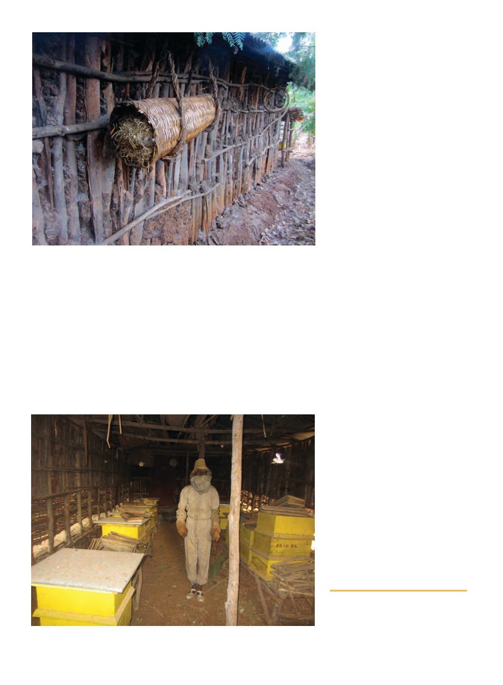

American Bee Journal
884
Tigray region, found that beekeepers mainly
distinguished between “red” and “black”
bees. Both Girmay and Kerealem were very
doubtful of the “one unique species” hy-
potheses, but the supporting research seems
pretty sound to me – perhaps more research
in this area is necessary.
Traditional hives in Ethiopia are woven
cylinders, somewhat conical, plastered with
mud, dung and ash. They are typically hung
from eaves around the house, though some-
times they are on their own stands. Beekeep-
ers remove the back (wider) end to remove
honey combs, while leaving the brood
(which is always situated closest to the en-
trance). They apparently know how to com-
bine weak colonies (spraying the bees with
milk so they’ll clean each-other and thus
mingle their queen pheromone), and some
beekeepers even add extensions to their
hives during honey season, essentially giv-
ing them horizontal supers7!
I inquired about the price of a traditional
hive, and was told that certain people spe-
cialize in making them and the going rate (at
least in Korem) is 10 kilograms of grain in
exchange for the hive. Girmay and Ke-
realem both reported that beekeepers buy
and sell colonies of bees in the local market.
Beekeepers bring the entire hive with them
to the market for potential buyers to inspect,
and the price ranges from $2.29-12.57, with
an average of $6.69 in Amhara and $34.29-
$45.718 in Tigray9. While the Amhara prices
may seem cheap, keep in mind the average
monthly income for this same group of
farmers was $12.94 (15% of their total in-
come coming from beekeeping).10 From my
polling of the beekeepers in my training ses-
sion they seemed to get an average price of
about $0.92 / pound in Amhara and $4.55 in
Tigray. As you can see there’s a huge differ-
ence in both colony and honey prices be-
tween Amhara and Tigray, this is because
white honey from Tigray is of renowned
quality (I’m told it won first prize in a
worldwide honey-tasting contest) and it’s
bought by packers and sold throughout Eu-
rope and the Middle East. It has a natural
water content of 14% (we confirmed this
with refractometers), whereas the “normal”
water content for honey is 17%. This also
leads to it crystallizing extremely quickly.
Beekeepers also catch swarms by placing
bait hives (which look like smaller versions
of the normal woven hives) up in trees and
transferring the swarms into normal hives a
few days after they become occupied. One
of the few things they didn’t seem to have a
traditional method of doing was making
splits – to increase colony numbers their
main method is maintaining small hives in
gourds, which, because of the small size,
will swarm much more frequently (I like to
call these “swarmin’ gourds”), and catching
these swarms. Because hives are right beside
their houses, they claim they almost always
know when a colony is swarming. They wait
for the swarm to alight somewhere and ap-
parently take the queen, put her in a queen
cage they construct of bamboo, and move
her into a hive. The swarm will then follow
(this presumably requires the hive to be
placed in the immediate vicinity of the
swarm?). I also learned that they can make
a queen excluder out of paperclips, and
make a queen cage out of woven grass that
the bees will chew through in about three
days. Altogether, as you can see, their “tra-
ditional” beekeeping is very advanced.
The government recently decided to mod-
ernize the beekeeping sector. Their efforts to
do so are in many ways a classic example of
good intentions being implemented without
an understanding of the important details.
Though there seems to be a consensus
among beekeepers working in development
that topbar hives are better for impoverished
farmers, and most of the developing world
uses Langstroth frame hives, the govern-
ment of Ethiopia decided to order tens of
thousands of a frame hive called the “zan-
der” type to be made. I’m told the govern-
ment organized unemployed youth and had
them produce 35,000 zander hives the first
year, 45,000 the next, and 55,000 the third.
As such, of the beekeepers I met with, while
Closeup of traditional hives lashed to the side of the house, in the traditional
Ethiopian manner.
This apiary enclosure is ONLY accessible through the house, making it feel more
like a room of the house than an outdoor shed.
7 Murutse 2012.
8 Prices converted from birr at the current
rate of 17.5 birr to $1.
9 Amhara prices from Kerealem 2008,
Tigray prices from Gebremeskel 2012.
10 Kerealem 2008.